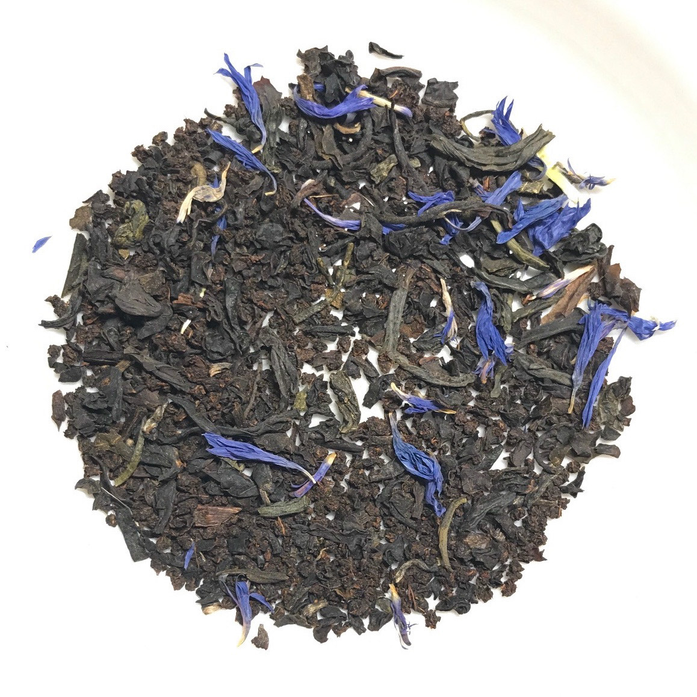

 Black tea is the most common type of tea. It is fully oxidized in order to bring out more flavours and darker colour. The flavor of this tea is more robust. The tea shown above is an example of a flavoured black tea called earl grey. It is one of the most recognized flavours of tea in the world, characterized by a strong bergamot flavour.